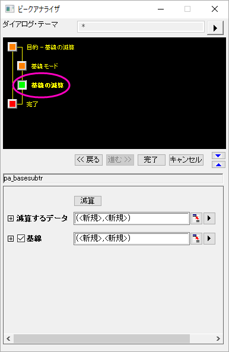
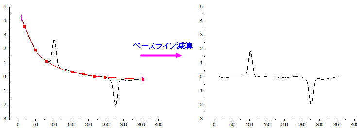

<h1 class="firstheading">ピークアナライザ, 基線の減算</h1>
<p class="urlname" style="display: none;">PeakAnalyzer-SubtractBaseline</p>
<p>このページは、<a href="../../UserGuide/UserGuide/Peak_Analyzer,_Start_Page.html#Goal_Page_Controls" title="ユーザガイド：ピークアナライザ, スタートページ"><b>基線の減算</b>が<b>処理</b></a>に選択されている場合に利用出来ます。これは、減算されたデータおよび基線を得るのに役立ちます。</p>
<dl>
<dd>
<dl>
<dd><a class="image" style="color: #0000ff; text-decoration: underline;"></a></dd>
</dl>
<ul>
<li><i style="font-style: italic;">メニューの</i> <b>解析</b>: <b>ピークと基線</b>: <b>ピークアナライザー</b>: <b>ダイアログを開く</b>を選択します。</li>
<li><i style="font-style: italic;">ウィンドウタイプ</i>: ワークブック、グラフ</li>
</ul>
</dd>
</dl>
<h2><a name="Dialog_Theme" id="Dialog_Theme"></a><span class="mw-headline">ダイアログテーマ</span></h2>
<table class="dialogcontroltable">
<tr>
<th>ダイアログテーマ</th>
<td>こちらを参照してください <a href="../../UserGuide/UserGuide/The_peak_analyzer_themes.html" title="ユーザガイド:ピークアナライザテーマ">ピークアナライザーテーマ</a>.</td>
</tr>
</table>
<h2><a name="Subtract_Baseline_Controls" id="Subtract_Baseline_Controls"></a><span class="mw-headline">基線の減算</span></h2>
<table class="dialogcontroltable">
<tr>
<th>減算</th>
<td>このボタンをクリックすると、基線を減算します。</td>
</tr>
<tr>
<th>減算なし</th>
<td>このボタンをクリックすると、基線の減算を元に戻します。</td>
</tr>
<tr>
<th>減算するデータ</th>
<td>減算するデータを指定します。<a href="../../UserGuide/UserGuide/Output_Results.html" title="ユーザガイド：出力結果">出力結果</a>を参照してください。</td>
</tr>
<tr>
<th>ベースライン</th>
<td>基線データを指定します。<a href="../../UserGuide/UserGuide/Output_Results.html" title="ユーザガイド：出力結果">出力結果</a>を参照してください。</td>
</tr>
</table>
<dl>
<dd><a class="image" style="color: #0000ff; text-decoration: underline;"></a></dd>
</dl>
